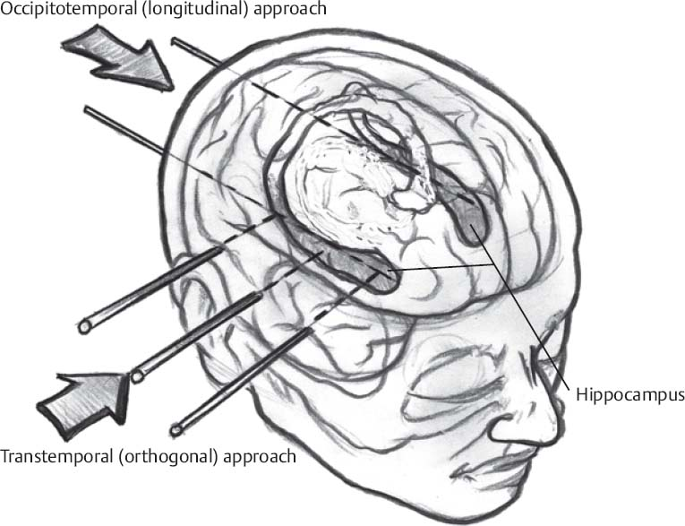

The Objective: Precision Neurosurgery
Goal: Automate the path planning and robotic insertion of an electrode into the hippocampus to monitor temporal lobe epilepsy. This required building an end-to-end system that could interpret MRI brain segmentations, calculate a safe physical trajectory, and command a 6-DOF robotic arm to execute the movement in a simulated environment.